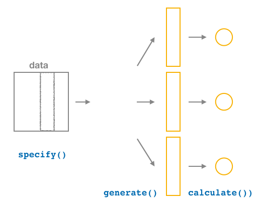
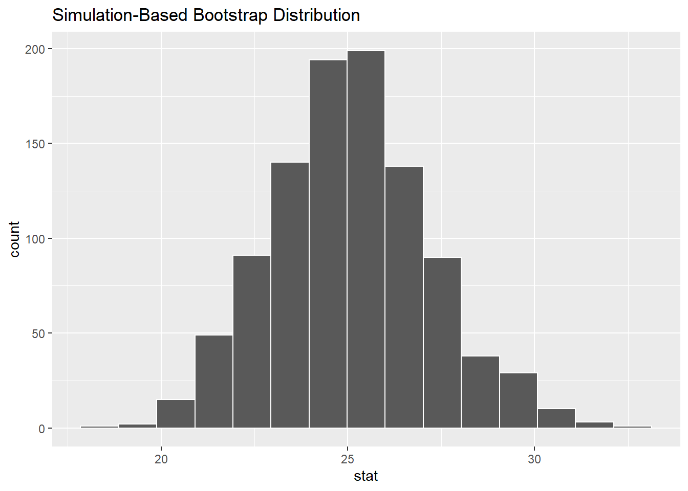

The infer package for statistical inference
The infer package makes great use of the tidyverse "pipe" %>% to create a pipeline for statistical inference. The goal of the package is to provide a way for its users to explain the computational process of confidence intervals and hypothesis tests using the code as a guide. The verbs build in order here, so you'll want to start with specify() and then continue through the others as needed.
specify()

The specify() function is used primarily to choose which variables will be the focus of the statistical inference. In addition, a setting of which variable will act as the explanatory and which acts as the response variable is done here. For proportion problems (i.e. Scenarios 1 & 3 in Table 1) we also specify which of the different levels we are calculating the proportion of (e.g. "females", "approve of Obama's job performance", etc.).
To begin to create a confidence interval for the population mean age of US pennies in 2011, we start by using specify() to choose which variable in our orig_pennies_sample data we'd like to work with. This can be done in one of two ways:
- Using the
responseargument:
orig_pennies_sample %>%
specify(response = age_in_2011)- Using
formulanotation:
orig_pennies_sample %>%
specify(formula = age_in_2011 ~ NULL)Note that the formula notation uses the common R methodology to include the response \(y\) variable on the left of the ~ and the explanatory \(x\) variable on the right of the "tilde." Recall that you used this notation frequently with the lm() function when fitting linear regression models. Either notation works just fine, but a preference is usually given here for the formula notation to further build on the ideas from earlier chapters.
generate()

After specify()ing the variables we'd like in our inferential analysis, we next feed that into the generate() verb. The generate() verb's main argument is reps, which is used to give how many different repetitions one would like to perform. Another argument here is type, which is automatically determined by the kinds of variables passed into specify(). We can also be explicit and set this type to be type = "bootstrap". Make sure to check out ?generate to see the options here and use the ? operator to better understand other verbs as well.
Let's generate() 1000 bootstrap samples:
thousand_bootstrap_samples <- orig_pennies_sample %>%
specify(response = age_in_2011) %>%
generate(reps = 1000)We can use the dplyr count() function to help us understand what the thousand_bootstrap_samples data frame looks like:
thousand_bootstrap_samples %>% count(replicate)# A tibble: 1,000 x 2
# Groups: replicate [1,000]
replicate n
<int> <int>
1 1 40
2 2 40
3 3 40
4 4 40
5 5 40
6 6 40
7 7 40
8 8 40
9 9 40
10 10 40
# ... with 990 more rows
# i Use `print(n = ...)` to see more rowsNote This is equivalent to thousand_bootstrap_samples %>% group_by(replicate) %>% summarise(n=n())
Notice that each replicate has 40 entries here. Now that we have 1000 different bootstrap samples, our next step is to calculate the bootstrap statistics for each sample.
calculate()

After generate()ing many different samples, we next want to condense those samples down into a single statistic for each replicated sample. As seen in the diagram, the calculate() function is helpful here.
As we did at the beginning of this chapter, we now want to calculate the mean age_in_2011 for each bootstrap sample. To do so, we use the stat argument and set it to "mean" below. The stat argument has a variety of different options here and we will see further examples of this throughout the remaining chapters.
bootstrap_distribution <- orig_pennies_sample %>%
specify(response = age_in_2011) %>%
generate(reps = 1000) %>%
calculate(stat = "mean")
bootstrap_distributionResponse: age_in_2011 (numeric)
# A tibble: 1,000 x 2
replicate stat
<int> <dbl>
1 1 24.6
2 2 25.1
3 3 29.8
4 4 24.2
5 5 26.0
6 6 26.5
7 7 26.8
8 8 29.2
9 9 21.8
10 10 23.8
# ... with 990 more rows
# i Use `print(n = ...)` to see more rowsWe see that the resulting data has 1000 rows and 2 columns corresponding to the 1000 replicates and the mean for each bootstrap sample.
Observed statistic
Just as group_by() %>% summarize() produces a useful workflow in dplyr, we can also use specify() %>% calculate() to compute summary measures on our original sample data. It's often helpful both in confidence interval calculations and in hypothesis testing to identify what the corresponding statistic is in the original data. For our example on penny age, we computed above a value of x_bar using the summarize() verb in dplyr:
orig_pennies_sample %>%
summarize(stat = mean(age_in_2011))# A tibble: 1 x 1
stat
<dbl>
1 25.1This can also be done by skipping the generate() step in the pipeline feeding specify() directly into calculate():
orig_pennies_sample %>%
specify(response = age_in_2011) %>%
calculate(stat = "mean")Response: age_in_2011 (numeric)
# A tibble: 1 x 1
stat
<dbl>
1 25.1This shortcut will be particularly useful when the calculation of the observed statistic is tricky to do using dplyr alone. This is particularly the case when working with more than one variable.
visualize()

The visualize() verb provides a simple way to view the bootstrap distribution as a histogram of the stat variable values. It has many other arguments that one can use as well including the shading of the histogram values corresponding to the confidence interval values.
bootstrap_distribution %>%
visualize()
The shape of this resulting distribution may look familiar to you. It resembles the well-known normal (bell-shaped) curve. It is, in fact, an estimate of the sampling variability of the sample statistic. If you think back to Statistical Inference in Semester 1 you will remember that the Central Limit Theorem predicted that the sampling distribution would be a normal distribution, as seen in the bell-shaped distribution here.
The following diagram recaps the infer pipeline for creating a bootstrap distribution.